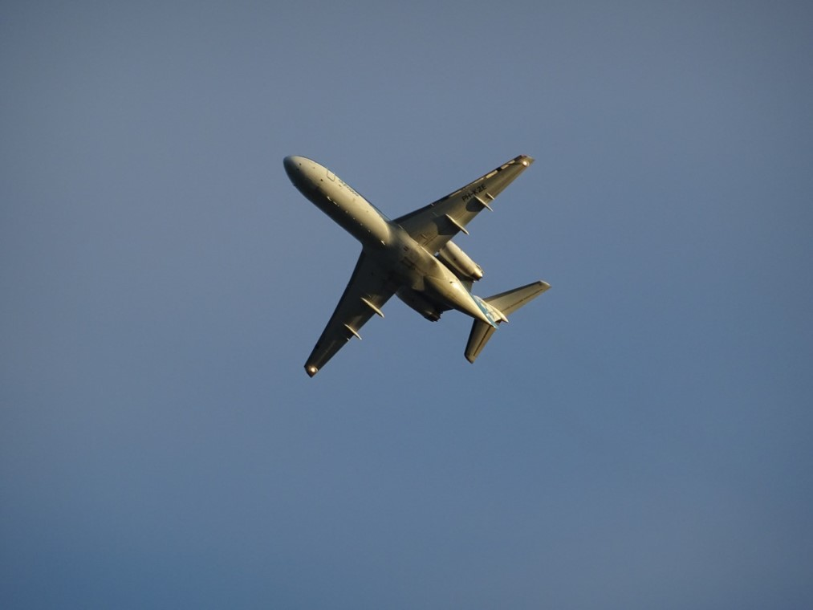
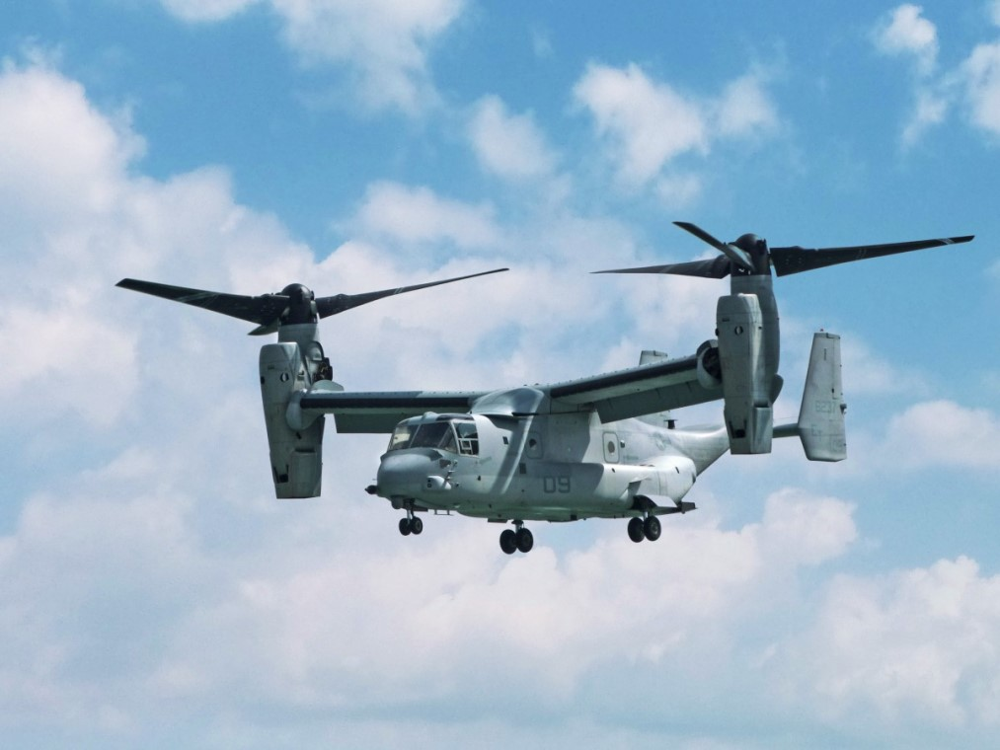
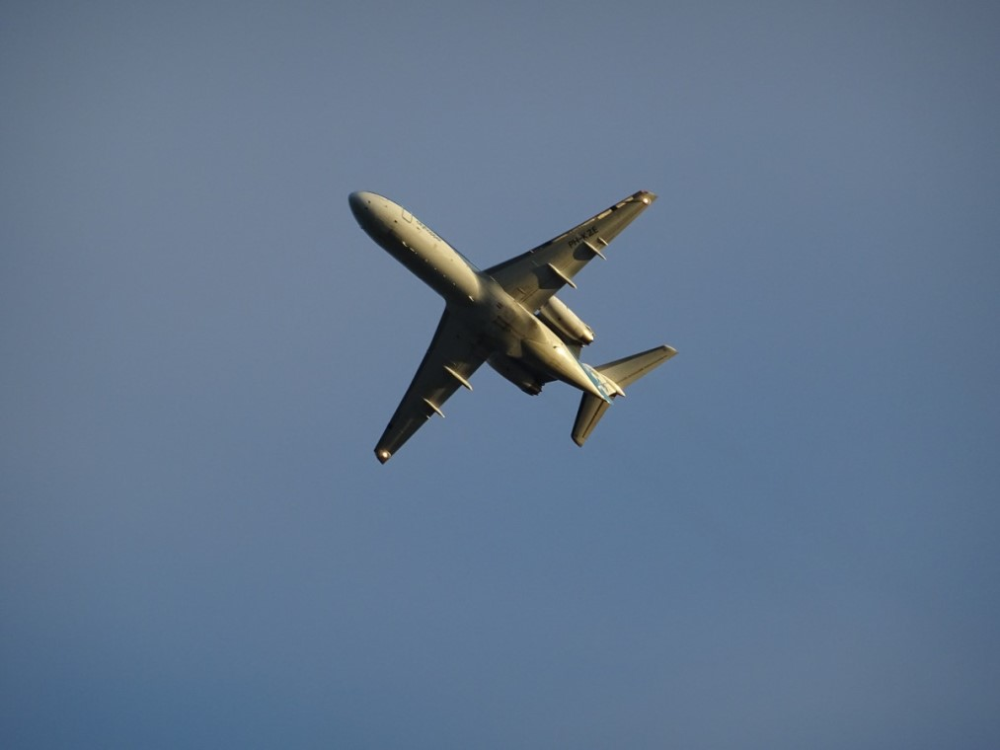
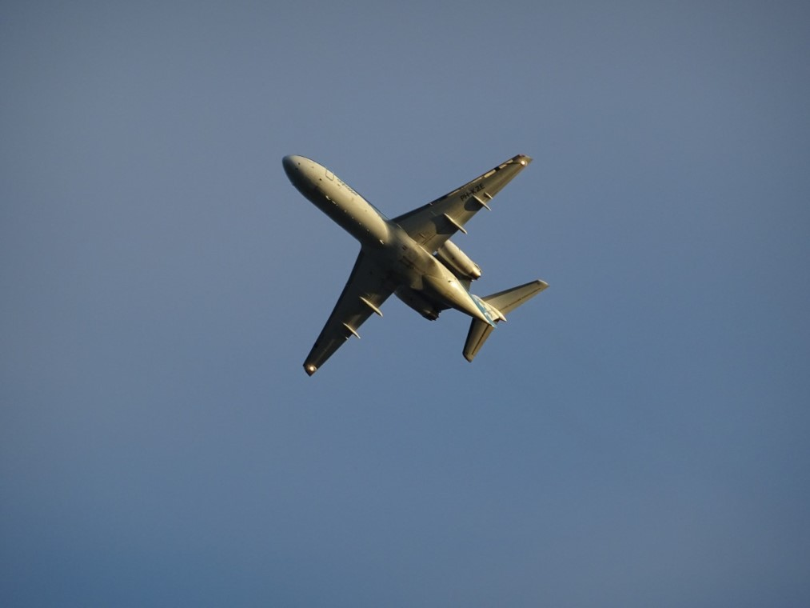

Mon nom est Victor Mauboussin.
Je suis étudiant en informatique à Nevers.
Je suis pationné par ce que je fais en cours, en travail personnel ou en groupe ou même lors de la représentation de l'école dans divers forums ou même par l'idée que je travaillerai un jour dans un secteur qui me plait, aliant au moins deux de mes passions : le numérique et l'aéronautique !
Ce site est un projet pationnant initié par notre responsable de formation et intervenant Web Mr ROBBE.
Les consignes sont précises :
Mission : Développez un site web sur un sujet de votre choix.
Pas de base de données;
Pas de langage de script server-side;
Site compact, structuré en dossiers spécifiques par type de contenus, en un maximum de six pages web distinctes, hors pages imposées (mentions légales, sources);
Respect des contraintes légales sur le droit à l’image et la propriété intellectuelle;
Séparation entre le contenu des pages et leur mise en forme;
Réalisation en HTML5 (XHTML1.0 strict toléré) et mise en forme par feuilles CSS3;
Mise en page libre, mais sans balise de tableau ou de cadre (balises frame, frameset proscrites);
...
Avant de continuer dans la présentation de mon parcours et de mes différentes activités, je vous invite à vous laisser planner avec les quelques images qui suivent... on se retrouve à l'attérissage... Bon vol !
Commençons par quelques avions civils :
Boeing 757-300 Condor (EU)AIB A320neo F-WNEW (FR)Boeing 777-200ER (USA) Long-courrierBoeing 737 (USA) Court/Moyen-courrierConcorde (FR/UK) premier avion civil à atteindre mach 2 (2 fois la vitesse du son soit 2469,6km/h)A 380 (EU)

Lien de téléchargement libre
Continuons par quelques avions/hélicoptères de combat :
Le russe Mi-24 est un des premiers hélicoptères d’attaque spécialisés dans le monde, destiné à soutenir l’infanterie et détruire le matériel blindé de l’ennemi. Le Mi-24 peut également être utilisé comme hélicoptère de transport pour huit personnes maximum. Ce vétéran, dont la construction a commencé au début des années 70, reste toujours opérationnel et a de nombreuses versions.Destiné à un usage embarqué (porte avion) le F/A-18 de l'U.S. Navy est un avion de combat multirôle (chasseur-bombardier, reconnaissance, interception, frappe au sol). environ 1500 unités sont déployées à travers le monde dont la plupart au sein des forces Américaines.Le Bell Boeing V-22 Osprey est un avion de transport hybride doté de la faculté de décoller verticalement grace à ses rotors basculants à la manière des hélicoptères. C'est un avion destiné au transport de troupes/équipements militaire dans des zones ou un attérissage traditionnel serait impossible.Fabriqué par Eurocoptère, le Tigre est un hélicoptère spécialisé dans l'attaque HAP(appui protection), HAD(appui destruction) UHT(Anti-char Air-Sol) ou encore ARH(reconnaissance). Son fuselage étudié pour être le plus fin possible ainsi que son double moteur de plus de 1200 ch lui permetent une vitesse assentionnelle très rapide (842m/min) ainsi qu'une vitesse maximale en piquée de 370km/h. Extrèmement agile et efficace, cet hélicoptère est considéré comme l'un des plus performant, également en terme de distance puisqu'il peut couvrir 1300km. En outre, sa ligne extrêmement fine le place comme une cible difficile à atteindre. (voir image suivante)La Gazelle. Production française, cet hélicoptère léger et polyvalent est principalement utilisé pour des missions de reconnaisance civiles ou militaires (caméra Viviane) mais est encore aujourd'hui très usité pour des missions de combat de soutien d'infenterie, puisqu'il est équipé de divers armements (canon 20mm, 2x2 missiles antichar HOT, 2x2 missiles AA Mistral à reconnaissance thermique ou encore 2x2 missiles AA SA-7 Grail d'origine Russe.Avion de combat omnirôle far de la Marine nationale ainsi que de l'Armée de l'air Française, c'est la puissance à l'état brut qui est développée dans ce bijou de technologie qu'est le Rafale. Non le seul dans sa catégorie à atteindre une vitesse hypersonnique, il est cependant seul capable de prouesses incroyable comme le décolage d'un porte avion en quelques secondes et en moins de 400 mètres. De même, bien que sa vitesse d'approche soit encore élevée (220km/h) il est capable d'attérir sur des distances très courtes (450m) sans utiliser de parachute. Sa particularité veut qu'il soit possible de le ravitailler en plein vol grace à un avion-ravitailleur, lui permettant ainsi de prolonger ses missions de reconnaissances sans retourner à sa base. Les ailettes disposées de part-et-d'autre du cokpit lui permettent des manoeuvres et des changement de trajectoires efficaces, pouvant pallier à une éventuelle menace. Tous ses équipements font de cet avion une arme de guerre à la fois puissante, efficace, et le cas échéant facilement désengageable dans le cas d'un combat aérien défavorable.Pour finir cette petite présentation des apareils liés à la 3ème dimension, je souhaite terminer par l'AWAX. Cet avion de commandement aéroporté est un indispensable dans toute stratégie militaire. En effet il est a lui seul les yeux et la voix des pilotes engagés dans des conflits. L'altitude qu'il est capable d'atteindre lui confère furtivité et puissance d'action. Ses systèmes de détection peuvent repérer un avion jusqu'à 500km de distance. Spécialisé dans le renseignement en temps réel de mouvements militaires, c'est la précision des données collectées qui peuvent faire la différence sur un conflit. Cet avion est capable de contrôler à distance et avec une précision milimétrée des aérostats pouvant rester en activité plusieurs semaines sur site. L'un des fleuron de l'industrie aéronautique mondiale encore aujourd'hui considéré comme la plus efficace des ressource militaire stratégiques matérielle.
Mon introduction étant désormais terminée, je vous invite à consulter les différentes pages suivantes afin d'en savoir un peu plus sur mon parcours ainsi que mes motivations. Bonne lecture !

 
Lien de téléchargement libre

Lien de téléchargement libre